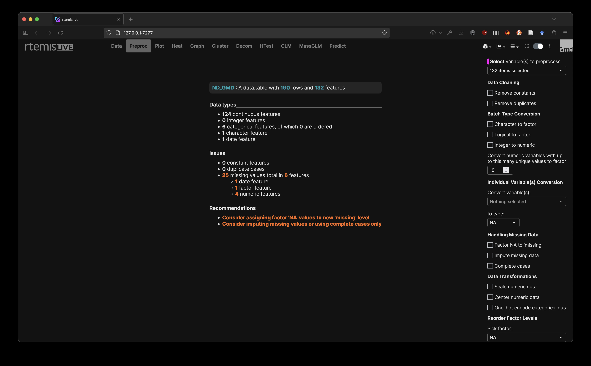

3 Preproc
The Preproc module provides:
- Summary of your data: this is the output of the rtemis
check_data()function - Extensive options for data preprocessing: preprocessing is performed using the rtemis
preprocess()command.
Hover over any preprocess option on the right menu to display a tooltip with the corresponding description.
The following operations are available:
- Data Cleaning
- Remove constants
- Remove duplicates
- Batch Type Conversions, i.e. convert all columns of a type to another type
- Character to factor
- Logical to factor
- Integer to numeric
- Convert all variables with up to a particular number of unique values to factor This can be very useful on a dataset that has not been cleaned yet. For example, if sex is recorded as 1,2 and race is recorded with integers 1-6, setting this to 6 will convert both to factors.
- Individual variable conversion
- Select a variable by name and convert to any type
- Handle missing data:
- Factor NA to missing: Considering all factor variables, convert missing values to a new level named “missing”. This is one way to impute categorical data
- Impute missing data: Uses iterative random forest with predictive mean matching to predict missing data from available data
- Add missingness: Add an indicator column for each variable that is being imputed indicating cases whose data was imputed
- Complete cases: keep complete cases only
- Data Transformations
- Scale numeric data: Transformed all numeric columns to have a standard deviation of 1
- Center numeric data: Transformed all numeric columns to have a mean of 0
- One-hot encode categorical: One-hot all categorical variables
- Reorder factor levels: Allows you to pick any factor in the dataset and explicitly set the order of levels. This affects the order categorical levels appear in plots, and which level is considered as the baseline in linear models.
- Delete columns: Allows removing columns from your data